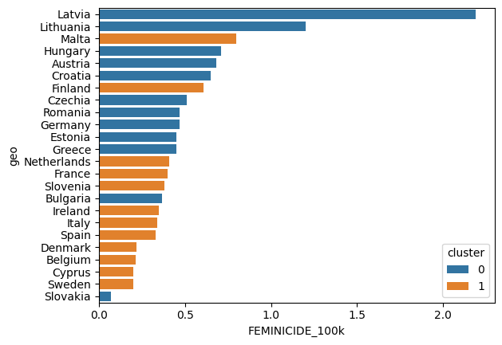

PREMESSE
- dati storici poco presenti
-alcuni sondaggi sono episodici
-natura di femminicidio diversa da paese in paese, usiamo proxy omicidio di donna da parente o partner dato che
comunque approssima bene il fenomeno (la maggior parte dei femminicidi avviene da conoscenti)
FONTI DATI:
# Dati Femminicidio (hundred thousand inhabitants) EUROSTAT
# ( Dati bulgaria - belgio - denmark - Estonia da WAVE Country Report 2023)
# Gender equality index campi-> POWER(position among istitutions and company) ,
SEGREGATION (difference in edu field) ,
TIME (care activities,cooking,social activities)
# FRA survey 2012 questions: reason to not contacted services after violence, economic violence during life
#protection index: presi dati su Wave country report 2023 su: numero aiuto nazionale, chiamate ricevute,
# n shelter, letti, n woman centers, presenza supporto violenza e piano prevenzione.
#Trasformati in dummy (per presenza/assenza) o rapportati alla popolazione per quelle numeriche.
# dati Poi normalizzati e calcolata la media semplice senza ponderazione.
Per scegliere le variabili più informative abbiamo effettuato un doppio test:
- Coefficiente correlazione lineare
- Clustering con K-means
La potenza di questi metodi incrociati è che permette di capire a fondo la natura del fenomeno e dei dati: se è possible
adottare modelli e ragionamenti lineari o se occorre prendere la strada della multiplicità del fenomeno, fatto di relazioni non lineari
profili diversi e interazioni tra variabili.
Tramite una matrice di correlazione otteniamo i seguenti dati verso il livello di femminicidi:
FEMINICIDE_100k 1.000000
power -0.146734
segregation -0.497518
time -0.214998
shame 0.333514
useless 0.415010
economic_violence 0.266780
PAY_GAP 0.255228
DIVORCE_RATE 0.416077
FEMALE_EMPLOYMENT 0.140595
%_FEM_TER_EDU 0.060473
VIOLENCE 0.053978
%_AT_RISK_POVERTY_EXCLUSION 0.281343
protection_index -0.647621
Le variabili meno informative in modo lineare sono FEMALE_EMPLOYMENT e VIOLENCE
Provando a usare un k-means per dividere i dati in due cluster otteniamo una cosa più interessante.
Il modello basato su distanze riesce a catturare meglio la natura dei dati, ottenendo due cluster con differenza notevole
nei femminicidi medi tra i due gruppi. Infatti abbiamo:
cluster
0 0.684583
1 0.371250

Iniziamo testando un modello lineare e vedere come si comportano le variabili. Per questo modello toglieremo le due variabili
meno significative statisticamente, VIOLENCE, DIVORCE_RATE e %_FEM_TER_EDU (vedere sopra) e dopo aver accertato che non
ci sono problemi di multicollinearità proviamo la regressione.
Il risultato è mediocre perchè abbiamo un modello buono e significativo:
REGRESSIONE LINEARE R2 0.765 P(F)= 0.00879
ma in realtà la maggior parte dei coefficienti del modello risultano poco significativi (P value> 0.05> eccetto per
la variabile piu importante protection index che comunque da sola non riesce certo a spiegare il fenomeno.
Ora sappiamo che statisticamente le variabili insieme hanno un potere predittivo il modello
ma non possiamo dire che ogni variabile, da sola, contribuisca in modo netto.
MODELLO LOO RANDOM FOREST basato su 2 cluster (standard 4 max depth, 300 estimators)
Abbiamo scartato le variabili 'FEMALE_EMPLOYMENT','DIVORCE_RATE','economic_violence'
LOOCV Accuracy: 1.0
Confusion Matrix:
[[12 0]
[ 0 12]]
Precision classe 0: 1.0
Recall classe 0: 1.0
shame 0.296124
useless 0.240252
power 0.122942
%_FEM_TER_EDU 0.063559
time 0.062310
PAY_GAP 0.058515
protection_index 0.048819
segregation 0.045641
%_AT_RISK_POVERTY_EXCLUSION 0.041860
VIOLENCE 0.019979
